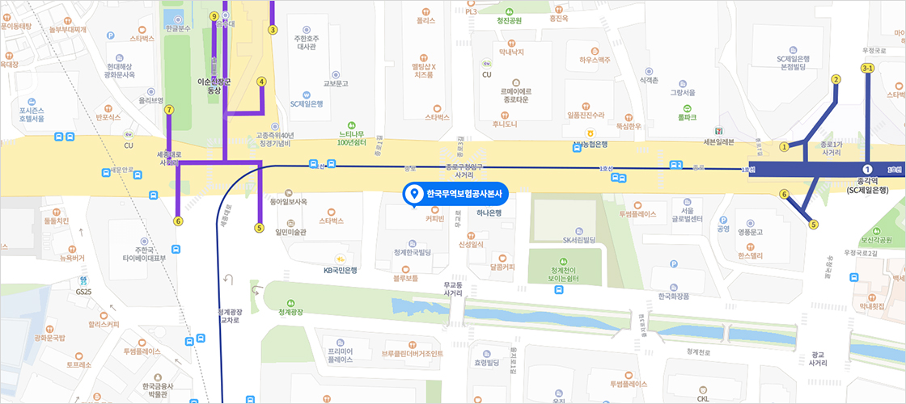

해양금융부

부산광역시 남구 문현금융로 40 (문현동) 부산국제금융센터 제21층 2101호, 한국무역보험공사 해양금융부 (우 48400)
- 전화 : 1588-3884
- 근무시간 : 평일 09:00~18:00, 토/일 및 주중 공휴일 휴무
해양금융종합센터 소개
글로벌 해양 비즈니스 니즈(needs) 충족을 위한 포괄적 해양금융(선박, 해양플랜트, 해운, 기자재) 제공을 위하여 무역보험공사, 수출입은행, 산업은행 3개 기관이 협업하여 서비스를 제공합니다.교통안내
※ 자세한 길찾기는 지도 우측 하단의 ‘카카오 길찾기’를 클릭해주세요.
지하철
-
2국제금융센터 · 부산은행역 3번 출구 지상버스
-
문전역
- 24, 583, 부산진구12
-
문전교차로
- 24, 583, 부산진구12
자가용 대구부산고속도로 대동JC → 모라고가교 → 백양터널 → 범내골역 → 문전교차로 지나 우회전 → 부산국제금융센터 -